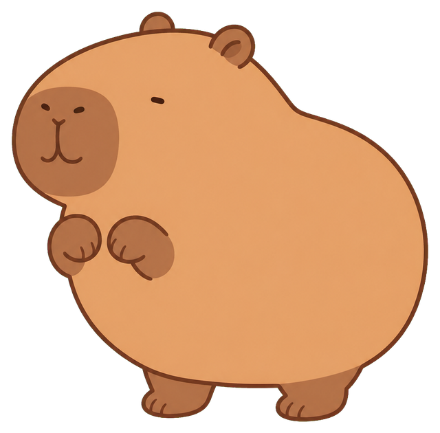
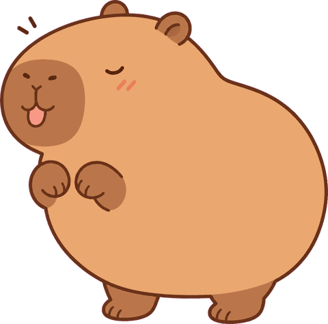

P10
5점 먼저1대 카피바라
카피바라0
CAPYBARA VOLLEY CLUB
머리콩!
카피바라 배구

머리로 톡! 먼저 5점!머리로 톡! 준비됐나요?
함께할 상대
P1AD 이동 W 헤딩
P2←→ 이동 ↑ 헤딩
터치끌어서 이동 · 톡 누르면 헤딩
영상과 상반신 좌표는 이 기기 안에서만 처리되며 저장되거나 전송되지 않습니다.
카메라와 상반신 인식 준비 중
카메라 권한을 요청합니다.
처음 실행할 때 자세 인식 모델과 WASM 파일을 받습니다. 몇 초 정도 걸릴 수 있습니다.
머리 인식 확인
카메라 정면 중앙에 서서 머리와 어깨를 보여 주세요.
0/1명 인식
인식 FPS --
상반신과 머리를 찾는 중입니다.
잠시 멈춤
경기를 다시 시작할 준비가 되면 계속하기를 누르세요.

MATCH COMPLETE
카피바라 승리!
잘했어요! 다음엔 더 길게 랠리를 이어 볼까요?
1대 카피바라 · 난이도 보통 · 5점 먼저WINNERP10
:
WINNER카피바라0
최장 랠리0 회
P1 헤딩0 회
시작할 수 없습니다
모드를 고르고 시작하세요.